IDE Master
Outline
we use phpstorm here!
extend and shrink selection
alt + w
alt + shift + w
Back and Forward Caret
ctrl + alt + left
ctrl + alt + right
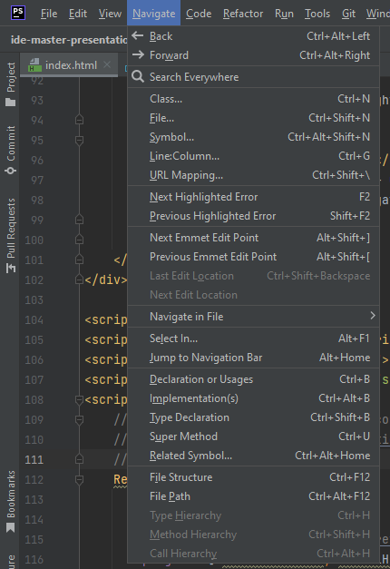resize window
ctrl+alt+shift+up/down
resize window
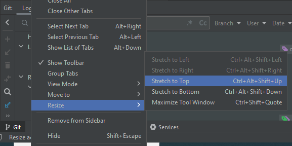Hide Window
shift+escape
next change in file
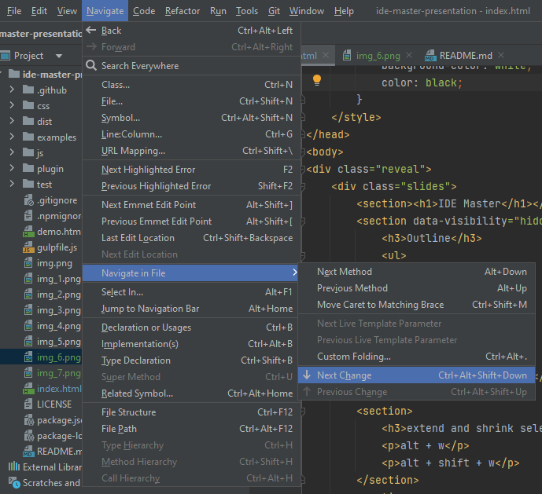surround with tag
ctrl + alt + t choose tag or t button or
- Menu Code -> Surround With
Advanced Parts
Add Carets End of Selected Line: alt + shift + G or Edit Menu
Join Lines
ctrl + shift + G
 |
⇒ |  |
Postfix code completion
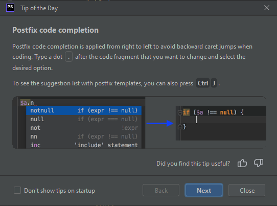Move Caret to Matching Brace
ctrl + shift + m
Navigate Menu -> Navigate in File -> Move Caret ...
Next/Previous Method
alt + up / down
Navigate Menu -> Navigate in File -> Next/Previous ...
Bookmark Line
F11
or with right click
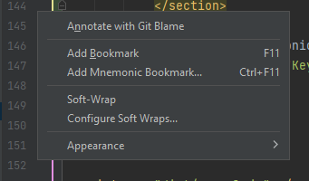Bookmark List
shift + F11
or use tool window
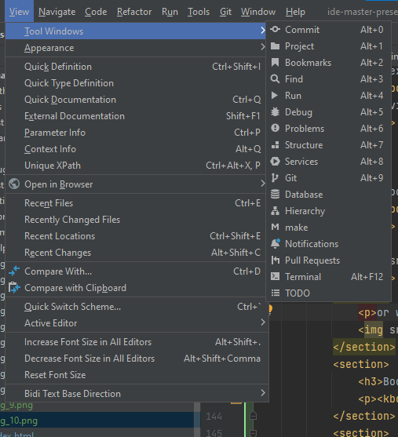
Mnemonic Bookmark
ctrl + F11
Go to Mnemonic
ctrl + shift + F11 and then use keyboard key
Tool Windows
Hide All Tool Windows
- ctrl+shift+F12
- Window | Active Tool Window | Hide All Windows/Restore Windows
- double click on code tab
switch between tool and code
F12 Go to code
Esc Go to latest tool window
Maximize Tool Window
ctrl+shift+'(quotation)
Important Tool Windows
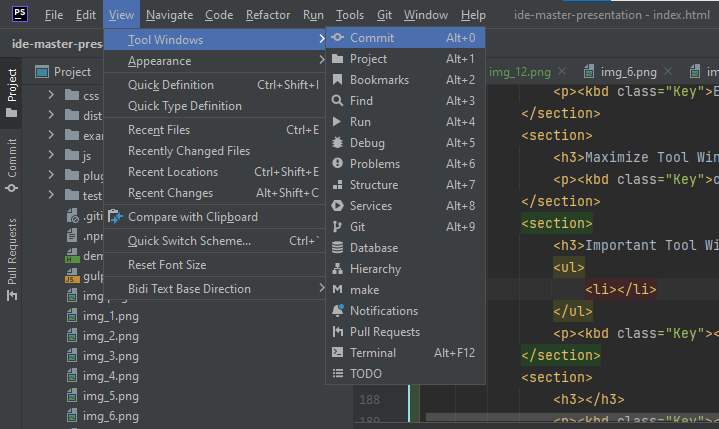Important Tool Windows
hover on button left of ide
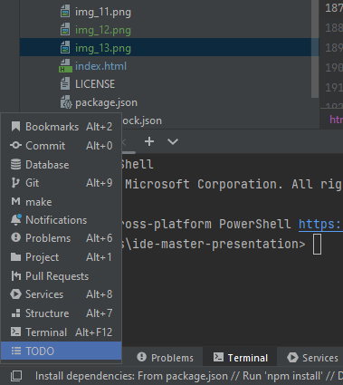Important Tool Windows
- alt+0 Git
- alt+1 Project
- alt+F12 Terminal
Hide/Close Active Tool Window
- Hide Active Tool Window shift+Esc
- Close Active Tool Window ctrl+shift+F4
Switcher
ctrl+Tab
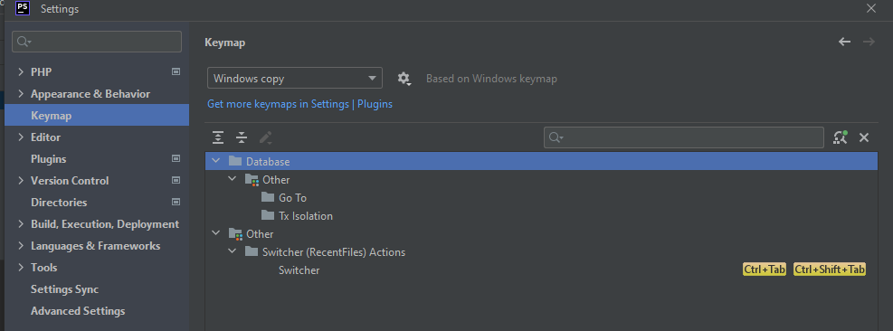Switcher
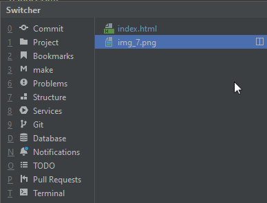Select In
alt+F1
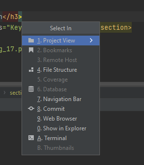Remove Tag (Preserves Children)
alt+enter
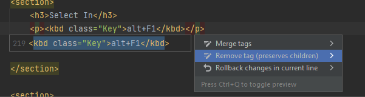Backquote Combinations
ctrl+` Switch
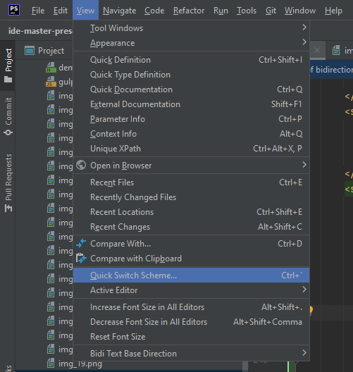Backquote Combinations
alt+` VSC
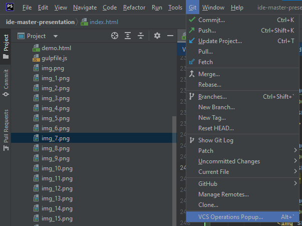Backquote Combinations
ctrl+shift+` Git Branches like what is down right corner
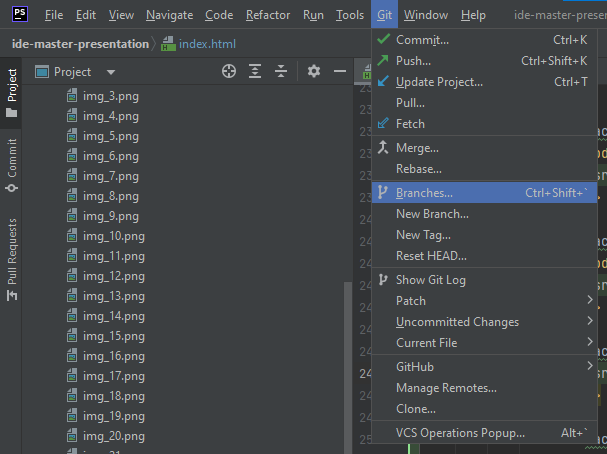Backquote Combinations
ctrl+shift+` Git Branches like what is down right corner
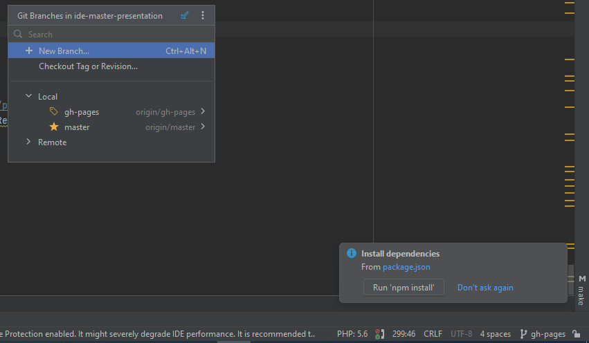sect>h3Backup Jetbrains live template and settings
todo!
Split Current Tag
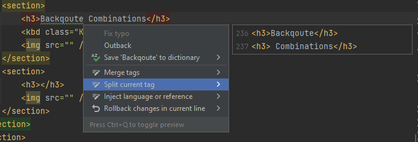Jump to Navigation Bar
You want to easily go to another file in this folder
alt+1 to go to project view and enter to choose this file in Project
It is a little slow to load files
use Jump to Navigation Bar
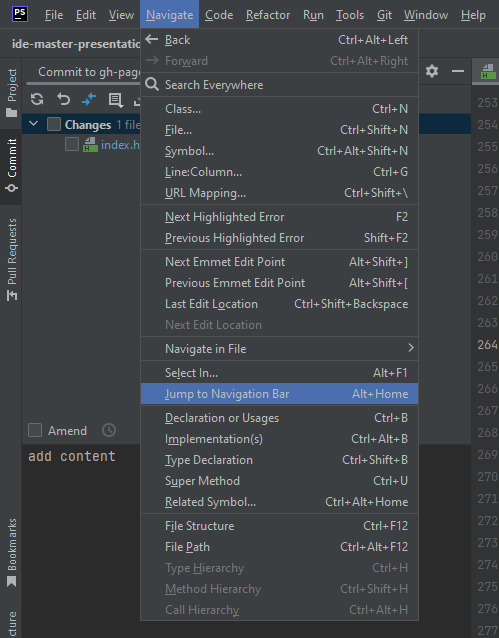you can search in it
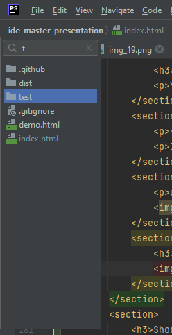Short Key for IDE Menus
use alt combination with underlined values
for example alt+v for View Menu
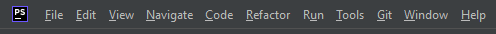actions in search (todo!)
Inlay Hints
In persian is تزئینات.
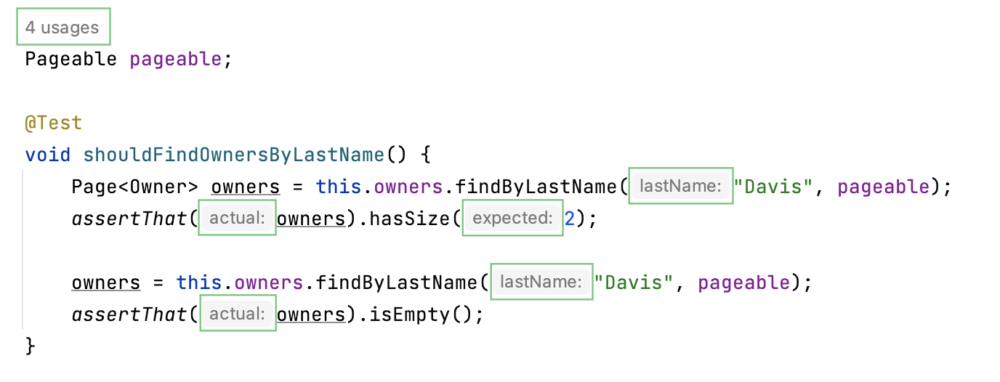Inlay Hints
for enable/disable or change position use settings
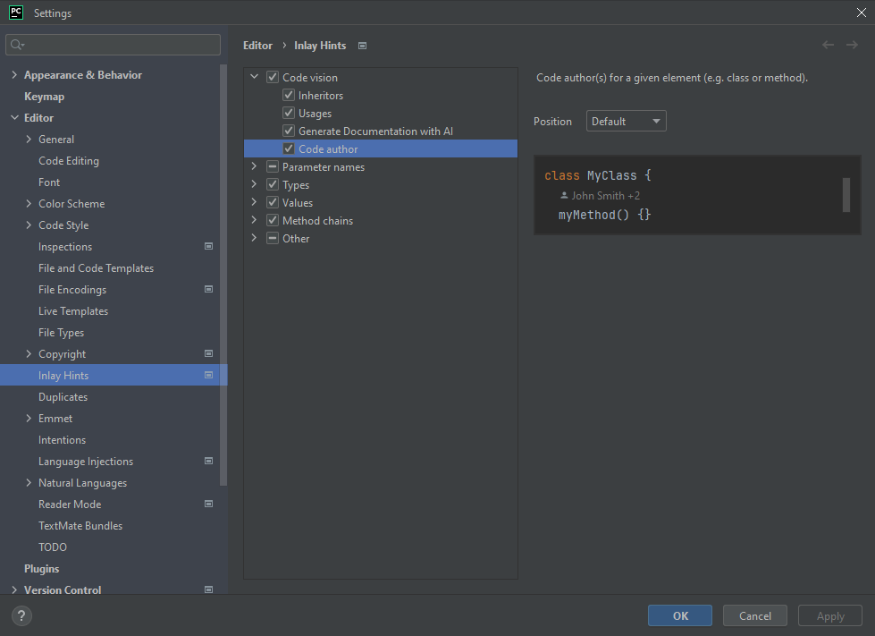Inlay Hints
or use right click but it's not accurate and remove group not the item
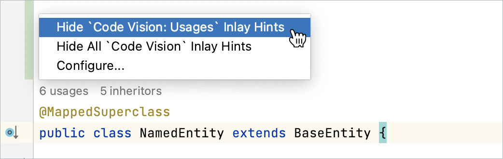